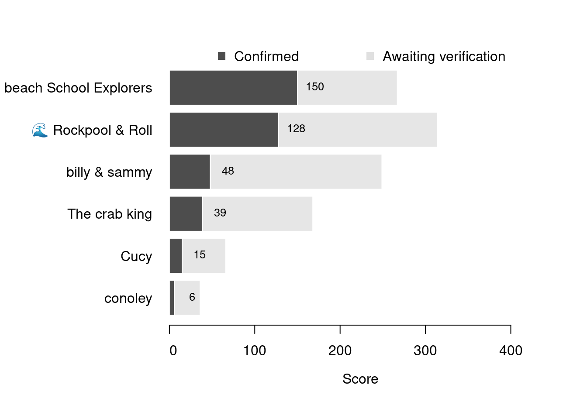

Content
You can view all the wildlife recorded at this event on iNaturalist.


| Records | 69 |
| Species | 31 |
| Verified species | 12 |
| Observers | 6 |
| Potential score | 579 |
| Confirmed score | 216 |
| Top verified species | Conopeum reticulum |
| Top species rarity score | 60 |
| Registered participants | 16 |
| Children attending | 24 |
Congratulations to beach School Explorers for taking the gold medal in this BioBlitz Battle! And well done to everyone for a great game and some fantastic wildlife finds.
| Team | Records | Potential Score | Confirmed Score |
|---|---|---|---|
| beach School Explorers | 11 | 267 | 150 |
| 🌊 Rockpool & Roll | 34 | 314 | 128 |
| billy & sammy | 4 | 249 | 48 |
| The crab king | 10 | 168 | 39 |
| Cucy | 7 | 66 | 15 |
| conoley | 3 | 36 | 6 |

| Participant | Records | Potential Score | Confirmed Score |
|---|---|---|---|
| Beach School Explorers | 11 | 267 | 150 |
| Sammy | 34 | 314 | 128 |
| sarahh297 | 4 | 249 | 48 |
| cmee2 | 10 | 168 | 39 |
| cem_yavuz | 7 | 66 | 15 |
| traceyconoley | 3 | 36 | 6 |
A total of 6 species have a verified rarity score of 10 or higher.


Community verified records only
Click any image to view the taxon on iNaturalist.
| Name | Rarity Score | |
|---|---|---|

|
Encrusting Bryozoan - Conopeum reticulum | 60 |

|
Striped Green Sea Anemone - Diadumene lineata | 45 |

|
dwarf eelgrass - Zostera noltii | 31 |

|
Chabot Bullhead - Cottus perifretum | 14 |

|
Dulse - Palmaria palmata | 14 |

|
Grey Mail-shell - Lepidochitona cinerea | 10 |

|
Gutweed - Ulva intestinalis | 9 |

|
Knotted Wrack - Ascophyllum nodosum | 8 |

|
Common Periwinkle - Littorina littorea | 8 |

|
European Green Crab - Carcinus maenas | 7 |

|
Black-headed Gull - Chroicocephalus ridibundus | 7 |

|
Amphipods, Isopods, and Allies - Peracarida | 3 |